Day 6: 完全掌握 Flutter APP 生命週期，跟著我從源碼認識它！
- 發布時間：2023-09-21 20:38:32
- 原文連結：https://ithelp.ithome.com.tw/articles/10324112
- 系列標記：探索 Flutter 由裡到外，三十天帶你前往進階系列 第 6 篇

到了生命週期第二篇，開發者不僅要了解 StatefulWidget 的生命週期，很常也會需要現在 APP 的週期狀態，而在 8/17 剛發布的 Flutter 3.13 改版，新增了 AppLifecycleListener api，讓我們更完整的掌控生命週期，而且多了幾種狀態，讓開發者能夠更精準的處理每個情境。常見的情境，包含我們在做一些 Socket 通訊的應用，即時在用戶到背景的時候失去連線，或是遊戲玩到一半返回桌面需要先暫停。在每個狀態下即時進行一些相對應的措施，讓使用者有一個良好的體驗。本文中會跟大家說明監聽生命週期的所有方式(新舊方法)，特別是 AppLifecycleListener 類別。
AppLifecycleListener
從字面上來看 AppLifecycleListener 就是負責監聽 APP 生命週期，而它跟我們常用的 didChangeAppLifecycleState() 不同地方就是能掌握的情境更多，先說明一下 APP 所有狀態
resumed→ 在裝置前景inactive→ 剛退出螢幕前景hidden→ 隱藏內容paused→ 退到裝置背景detached→ APP 被銷毀、釋放
resumed
- 在前景運行，通常手機正在顯示 APP 畫面
- 可以跟使用者互動
inactive
- 非活動狀態
- 在前景時插入其他應用，切到手機的APP選擇頁、子母畫面、電話、下滑的控制中心、系統視窗訊息等等，接著就是進入
hidden狀態 - 此狀態等於 Android.onPause()
hidden
- 即將進入背景時的過渡階段
paused
- 在背景運行
- 無法跟使用者互動，也是非活動狀態
- 此狀態等於 Android.onStop()
detached
- 一開始與結束的停止狀態
- 一旦從 Platform 收到第一個生命週期更新，就會更新到當前狀態
- 實際情況：APP被關閉清除
知道 APP 五大狀態後，接下來要了解狀態轉變過程中會觸發哪些情境也就是程式裡的 callback，總共有八種，我們需要了解從 APP 啟動到被銷毀的過程以及從背景回到前景過程。
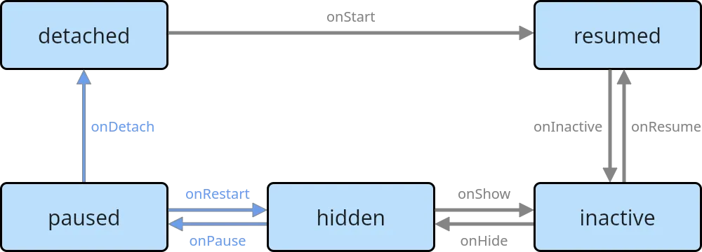
APP開啟到停止運作
- state: detached
onStart()- state: resumed
onInactive()- state: inactive
onHide()- state: hidden
onPause()- state: paused
onDetach()- state: detached
APP背景回到前景
- state: paused
onRestart()- state: hidden
onShow()- state: inactive
onResume()- state: resumed
提醒：onPause()、onDetach()、onRestart() 這三種狀況只會出現在 iOS 和 Android 裝置
有人看到這裡可能會問說，有沒有任何狀態改變都能捕捉的 callback？當然有呀！這時候我們可以使用 onStateChange()，除了個別狀態的 callback 會被觸發以外這個方法每次都會被觸發，讓我們在開發時可以進行不同處理。文章後面會有實際開發方式
取得當前 APP 狀態可以使用幾個方式 ，可以通過創建新的 AppLifecycleListener 或通過覆寫 WidgetsBindingObserver.didChangeAppLifecycleState 也能經由SchedulerBinding.instance.lifecycleState 來查看當前的APP狀態，有幾種方式能存取我們要的資料。
取得當前狀態
可以使用 SchedulerBinding.instance.lifecycleState，本身是 nullable，所以存取前記得檢查是否為空值。
@override
void initState() {
super.initState();
_state = SchedulerBinding.instance.lifecycleState;
if (_state != null) {
debugPrint(_state!.name);
}
}
監聽全部狀態
這件事很簡單，只需幾個步驟即可，首先我們要在 StatefulWidget 的 State 上去 with WidgetsBindingObserver 這個 mixin class，透過它我們才能進行 APP 狀態監聽。
class _MyHomePageState extends State<MyHomePage> with WidgetsBindingObserver {
...
}
那我們如何透過 WidgetsBindingObserver 去監聽呢，首先我們需要透過 addObserver() 去註冊這個 State 為監聽者，當有週期變化的時候才會通知我們。
WidgetsBinding 本身是一個 Flutter Framework 和 Flutter Engine 層溝通的橋樑，其中針對 SchedulerBinding(安排任務)、GestureBinding(手勢操作)、RendererBinding(渲染操作)等等都是它服務的對象。而在這過程中如何做到通知呢？核心都會使用到 InheritedWidget 去執行狀態更新。
- 在 State 裡的
initState()，也就是一開始的時候進行觀察者註冊
@override
void initState() {
super.initState();
WidgetsBinding.instance.addObserver(this);
}
- 在 State 裡的
dispose()，在銷毀的時候進行觀察者釋放，讓記憶體有效使用
@override
void dispose() {
WidgetsBinding.instance.removeObserver(this);
super.dispose();
}
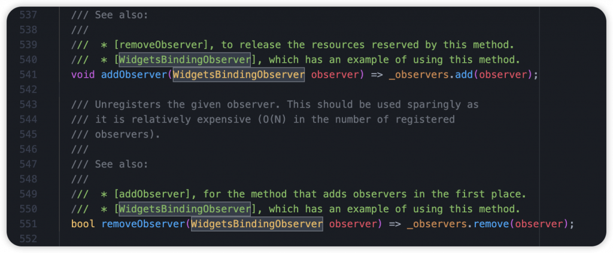
- 覆寫
didChangeAppLifecycleState()，監聽 APP 的五種狀態，在 Flutter 3.13 更新後多了hidden狀態
@override
void didChangeAppLifecycleState(AppLifecycleState state) {
super.didChangeAppLifecycleState(state);
if (state == AppLifecycleState.resumed) {
} else if (state == AppLifecycleState.inactive) {
} else if (state == AppLifecycleState.hidden) {
} else if (state == AppLifecycleState.paused) {
} else if (state == AppLifecycleState.detached) {
}
}
你以為這樣就結束了嗎？當然還沒，我們來了解一下底層做了哪些事。
在 APP 一開始 Flutter Engine 會透過 _updateInitialLifecycleState() 進行初始狀態的通知，接著 ServiceBinding 裡的 readInitialLifecycleStateFromNativeWindow() 會使用 _handleLifecycleMessage() 處理來自平台的初始狀態。

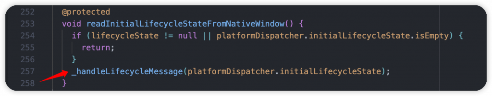
一開始會解析狀態字串，將從 Flutter Engine 拿到的字串轉成我們熟悉的 AppLifecycleState enum (看到這裡就想到可以使用 Dart3 的 switch expression 來優化一下XD)。

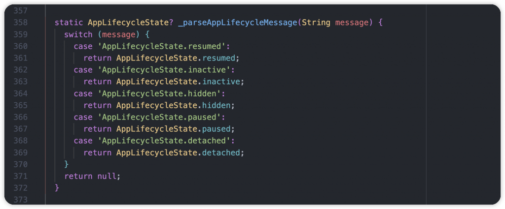
接著使用 _generateStateTransitions() 計算上一個狀態跟當前狀態的差異，返回一個 AppLifecycleState List，實際上有可能是 resume 到 paused，過程就會包含 inactive 跟 hidden。圖中紅線為重點部分，如果是 paused 到 detached 就不需要計算，直接回傳有 detached 狀態的 List。

取得改變的狀態清單後，呼叫 SchedulerBinding 裡的 handleAppLifecycleStateChanged()，在背景針對狀態做一些處理，同時通知有訂閱的 Observer，也就是 State 裡我們使用的 didChangeAppLifecycleState()。

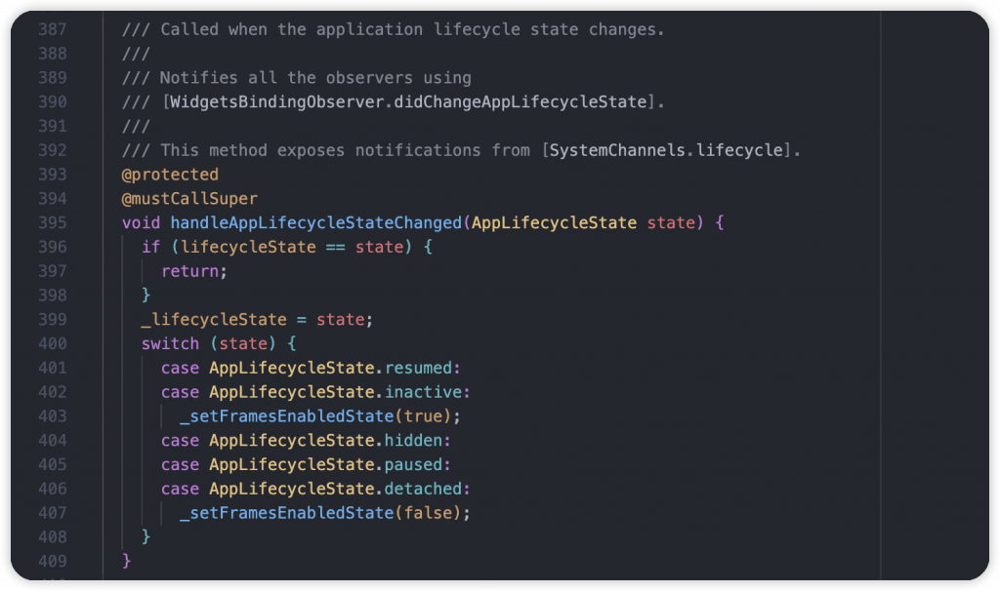
同時可以看到針對 inactive 狀態，在 APP 不活躍不可互動的時候，會呼叫 setFramesEnabledState() 更新 framesEnabled 為 false，也就代表現在不用再執行渲染了，暫停工作，節省手機電量。反之當 App 為 resume 狀態的時候，回來前景了，這時候繼續執行 scheduleFrame() 開始後續的渲染工作。

後續每當 APP 生命週期有變動的時候，在 ServicesBinding 裡都會透過 _handleLifecycleMessage() handler 進行接收，一樣會先將狀態字串轉換成 AppLifecycleState，最後傳遞給每個觀察者 observer，我們的 didChangeAppLifecycleState() 就會一直被通知，我們就能做一些對應的動作囉。


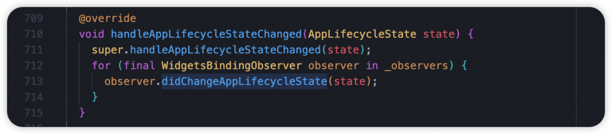
以下方的例子，就是當 APP 到背景的時候印出訊息，而當回到前景的時候顯示 Snack message。很多的情境都會使用到，可以發通知提醒使用者，或是有使用藍牙服務的話，可以即時暫停掃描。
@override
void didChangeAppLifecycleState(AppLifecycleState state) {
super.didChangeAppLifecycleState(state);
if (state == AppLifecycleState.resumed) {
ScaffoldMessenger.of(context).showSnackBar(const SnackBar(content: Text('App resumed.')));
} else if (state == AppLifecycleState.inactive) {
} else if (state == AppLifecycleState.hidden) {
} else if (state == AppLifecycleState.paused) {
debugPrint('App paused.');
} else if (state == AppLifecycleState.detached) {}
}
AppLifecycleListener 監聽狀態更新過程的所有情境 (新方式)
創建 AppLifecycleListener 實例，不需要跟以前一樣在 State 裡 mixin WidgetsBindingObserver 在元件創建的 initState() 進行監聽，最後再銷毀 dispose() 的時候釋放資源。這個動作很重要，記得不要忘記，否則會造成記憶體洩漏哦。
@override
void initState() {
super.initState();
_listener = AppLifecycleListener(
onShow: () => _handleTransition('show'),
onResume: () => _handleTransition('resume'),
onHide: () => _handleTransition('hide'),
onInactive: () => _handleTransition('inactive'),
onPause: () => _handleTransition('pause'),
onDetach: () => _handleTransition('detach'),
onRestart: () => _handleTransition('restart'),
onStateChange: _handleStateChange,
);
}
void _handleTransition(String name) {
debugPrint(name)
}
void _handleStateChange(AppLifecycleState state) {
// do something
}
@override
void dispose() {
_listener.dispose();
super.dispose();
}
一樣源碼環節，直接深入 AppLifecycleListener 這個類別，可以看到跟 State 一樣 with WidgetsBindingObserver，進行 observer 監聽，它包了一層，並暴露一些實用的 API。

主要在 didChangeAppLifecycleState() 監聽到狀態的時候，做了很多檢查還有觸發 callback，判斷上一個狀態跟當前狀態的差異，得知現在的場景，而不管怎麼樣都會觸發 onStateChange.call()。
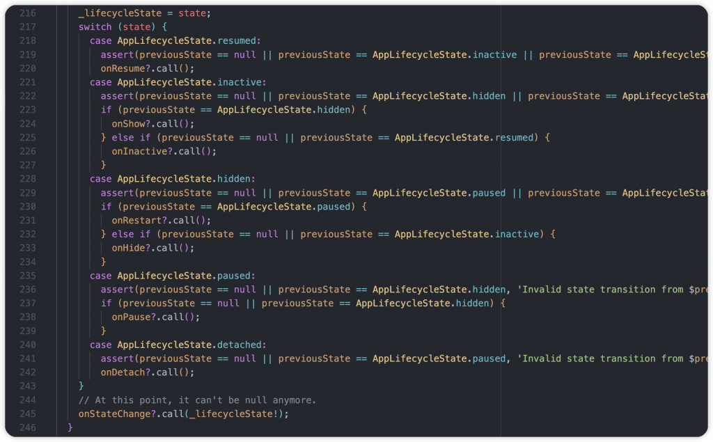
監聽 APP 退出時的請求
使用 onExitRequested() 可監聽 APP 退出時的請求，決定是否要讓 APP 關閉退出。
我們使用以下的官方範例來理解，可以創建一個 callback 接收事件，再被觸發的時候回傳 AppExitResponse，當有退出請求的時候我們可以告訴它是否允許退出，或是取消這請求。
@override
void initState() {
super.initState();
_listener = AppLifecycleListener(
onExitRequested: _handleExitRequest,
);
}
Future<AppExitResponse> _handleExitRequest() async {
final AppExitResponse response =
_shouldExit ? AppExitResponse.exit : AppExitResponse.cancel;
debugPrint(response.name);
return response;
}
Future<void> _quit() async {
final AppExitType exitType =
_shouldExit ? AppExitType.required : AppExitType.cancelable;
await ServicesBinding.instance.exitApplication(exitType);
}
AppExitResponse 擁有兩個類型
exit→ 允許 APP 退出cancel→ 禁止退出 APP
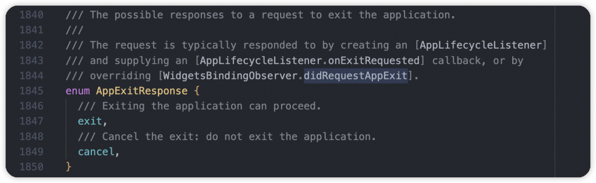
quit() 用來關閉運行中的 APP，執行 ServicesBinding.instance.exitApplication(exitType) 方法，其中參數是 AppExitType，一樣擁有兩個 type
required→ 允許 APP 退出cancelable→ 禁止退出 APP

當我們使用 ServicesBinding 的 exitApplication() 時會檢查是否有覆寫 onExitRequested()，沒有的話會直接回傳 AppExitResponse.exit，有的話會確認自定義的回應，接下來會檢查 AppExitResponse type 和 AppExitType type，總共有三種情況：
- 如果在預設沒有覆寫的情況下，就會自然關閉 APP
- 如果 AppExitResponse ****和 ****AppExitType ****其中有一個是允許退出的話，APP 就會執行關閉
- 只有在兩個都是 cancel 語義的情況下 APP 才不會退出
透過 ServicesBinding 的 exitApplication() 使用 SystemChannels 將 Flutter Engine 關閉並呼叫 Platform 的 exit API。
exitApplication()與exit()方法不同的是，它讓 Engine 有機會清理資源，以便在退出時不會崩潰，建議使用此方式退出 APP。
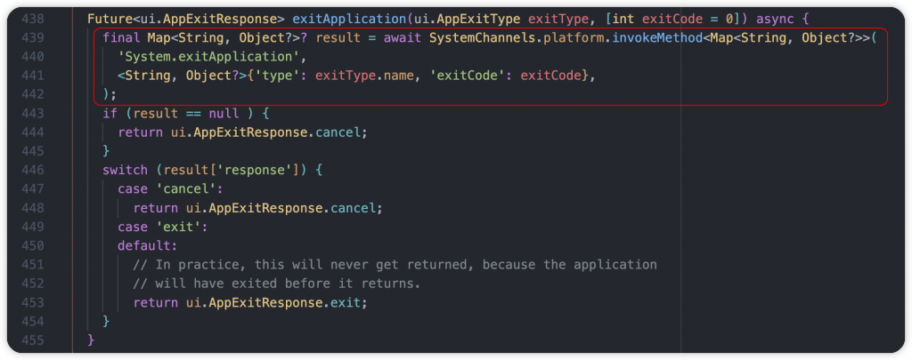
這時侯會從原生 Platform 取得 System.requestAppExit 事件，同時使用 handleRequestAppExit() 取得 AppExitResponse，它本身預設為 exit type，但我們有覆寫 didRequestAppExit() 也就是在 Widget-State 裡的 onExitRequested callback，看我們給予什麼 AppExitResponse
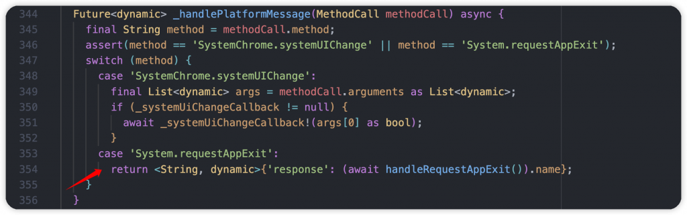
handleRequestAppExit() 裡面的邏輯是只要有一個 observer 是設置 AppExitResponse.cancel，也就是取消關閉，APP 就不會被關閉。
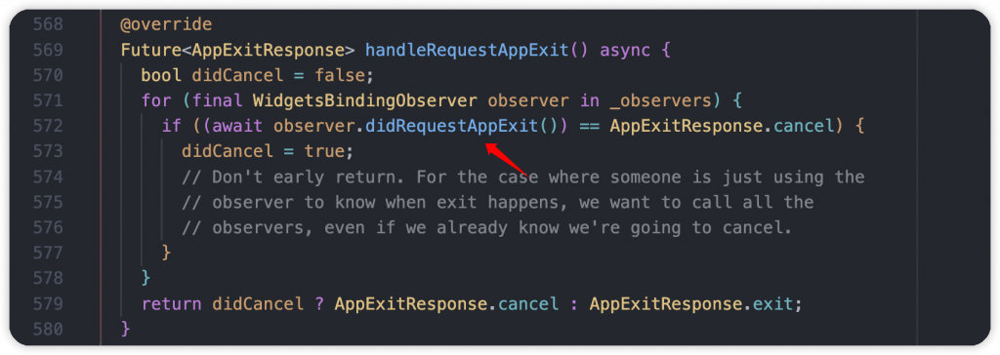

最後檢查 result Map 裡的 response 欄位，如果是 cancel 就繼續運行，exit 或沒有東西就會將 APP 關閉。
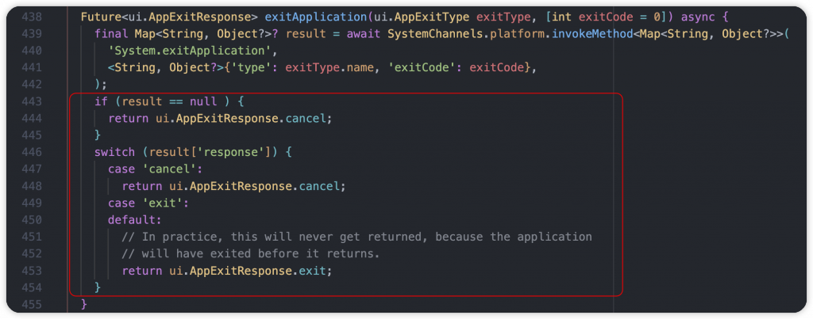
官方提醒：不要在 onExitRequested() 儲存重要數據，可能會錯誤和失敗。APP 本身可以通過很多種方式退出，而且不會提前告知，例如：拔掉電源、取出電池、任務管理器或使用 command line 終止。
本文篇幅稍微有點長，主要想告知大家生命週期的重要性，熟悉它是每個開發者都需要做的事，能有效理解 APP 如何運作，在對的時間做對的處理。而新推出的 AppLifecycleListener，讓我們可以監聽到狀態的轉換過程，相信對實際開發上一定會有所幫助。花一些時間了解它是很值得的哦！